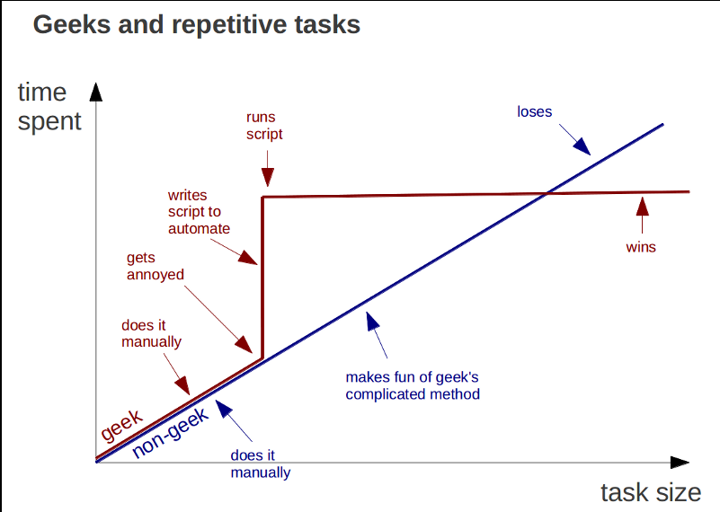

Writing Reusable Code with Functions
Let’s say you want to do this…
Start with sample sizes 3 through 5, and a population mean, and SD.
Run 1000 simulations.
For each simulation, calculate a mean, and then get the SE of the mean.
Have it all appear in a data frame with sample size and SE.
You could….
m <- 5
s <- 2
my_df <- data.frame(samp_size = 3:5,
se = rep(NA, 3))
my_df$se[1] <- sd(replicate(1000,
mean(rnorm(my_df$samp_size[1], m, s))))
my_df$se[2] <- sd(replicate(1000,
mean(rnorm(my_df$samp_size[2], m, s))))
my_df$se[3] <- sd(replicate(1000,
mean(rnorm(my_df$samp_size[3], m, s))))(yes, this is pre-dplyr)
So….What is wrong here?
Some wrong things
Copy-pasting is error prone
Repeated code can get long
Not scalable
You were doing 4 things in each line of code! Unreadable?
Solutions?
Solutions
- Write code for each individual sample size
- Lots of copy-paste
- What about if you have a different mean and SD?
- Lots of copy-paste
- Iterate over indices somhow?
- Only good for this one case - fragile code
- FUNCTIONS!
A Funcitonal Outline
Intro to Functions
Modular Programming
When to write a function
“You should consider writing a function whenever you’ve copied and pasted a block of code more than twice”
- H. Wickham
Ugh…
df <- tibble::tibble(
a = rnorm(10),
b = rnorm(10),
c = rnorm(10),
d = rnorm(10)
)
df$a <- (df$a - min(df$a, na.rm = TRUE)) /
(max(df$a, na.rm = TRUE) - min(df$a, na.rm = TRUE))
df$b <- (df$b - min(df$b, na.rm = TRUE)) /
(max(df$b, na.rm = TRUE) - min(df$a, na.rm = TRUE))
df$c <- (df$c - min(df$c, na.rm = TRUE)) /
(max(df$c, na.rm = TRUE) - min(df$c, na.rm = TRUE))
df$d <- (df$d - min(df$d, na.rm = TRUE)) /
(max(df$d, na.rm = TRUE) - min(df$d, na.rm = TRUE))What is a function?
What is a function?
- A new object
- A call identifying this as a function
- One or more arguments
- The body of the function
- A return statement that gives something back to the user (if needed)
What is a function?
What is a function?
[1] 4Simpler ways of writing functions
Let’s write some functions
[1] 4Let’s write some functions
Should return 4
Let’s write some functions
max_minus_min <- _______(___){
ret_value <- ___(___) - ___(___)
___(___)
}
max_minus_min(c(4,7,1,6,8))[1] 7On arguments
Functions can take many arguments:
These can be of any object type
Arguments can have default values
[1] 3You can have … to pass many arguments
make_mean <- function(a_vector, ...){
sum_vector <- sum(a_vector, ...)
n <- length(a_vector)
return(sum_vector/n)
}
make_mean(c(4,5,6), na.rm=TRUE)[1] 5Exercises
Write a function and paste it into the etherpad that
- Takes a vector and sums it up after it squares it
- use
c(4,5,6)to test (= 77)
- use
- Takes a number and combine it into a string with the word “elephants” using
paste().- 1 elephants, 2 elephants, 15 elephants
- Takes a number, a string, and a separator and combines them
- my_function(3, “hello”, “-”) makes “3 - hello”
EC. Write a function that takes a sample size, mean, SD, and number of sims, and returns a data frame with a mean and SE of said mean. Have it default to 100 sims.
Why are we doing this to ourselves?

A Function For Sampling
mean_and_se_sim <- function(n, m, s, sims = 100){
samps <- replicate(sims, rnorm(n, m, s))
means <- colMeans (samps)
out <- data.frame(mean = mean(means),
se_mean = sd(means))
return(out)
}
mean_and_se_sim(n = 5, m = 10, s = 3) mean se_mean
1 10.00506 1.227011How did I build that function?
- OK, what’s normally going to change
- Sample size, mean, and SD
- BUT - what could change under some circumstances?
- number of simulations
- Write some test code
Test Code
Test Code
# define a sample size, mean, and SD
n <- 5
m <-10
s <- 3
sims <- 100
# draw samples
samps <- replicate(sims, rnorm(n, m, s))
# calculate means from samples
means <- colMeans (samps)
# create a data frame with mean and se of the mean
out <- data.frame(mean = mean(means),
se_mean = sd(means))
# returnOne Function
mean_and_se_sim <- function(n, m, s, sims = 100){
samps <- replicate(sims, rnorm(n, m, s))
means <- colMeans (samps)
out <- data.frame(mean = mean(means),
se_mean = sd(means))
return(out)
}
mean_and_se_sim(n = 5, m = 10, s = 3) mean se_mean
1 10.10823 1.270329A Funcitonal Outline
Intro to Functions
Modular Programming
Problems with Our Function
Two lines to get a bootstrapped mean?
Why only mean? Can we generalize?
What to do? Modularize!
What to do? Modularize!

Wait, what is this modular madness?
Our code is now composed of modular pieces
This means each modular function can be used in other contexts
- Enhances code flexibility and future reuse
It also means it is easier to find where our code has gone wrong
- Easier to test and debug
AND - we don’t get lost writing one honking single function
How to write complex functions/piplines
Start with a wrapper
- Write out the steps of what you want to do in comments
- Pair those with functions using “snake case”
clean_data
- Use
%>%for efficiency/readability!
- Write out the steps of what you want to do in comments
Write the subfunctions
- Repeat the toplevel comments anf functions
Continue until you have the lowest level atomized functions
Test THOSE functions. Then test up the chain….
Reality Check
Yes, sometimes you will write long functions - as long as they are simple and readable, meh
What to do? Generalize!
Does it blend?
mean se_mean
1 10.03388 1.35743 stat se_stat
1 9.976402 1.302295Does it blend?
stat se_stat
1 9.971158 1.507131 stat se_stat
1 9.750696 1.665079 stat se_stat
1 2.820404 1.023062Putting it All Together with Dplyr
library(dplyr)
data.frame(samp_size = 5:10) %>%
rowwise(samp_size) %>%
summarize(stat_and_se_sim(n = 5, m = 10, s = 3, fun = sd)) %>%
rename(s = stat, se_s = se_stat)# A tibble: 6 x 3
# Groups: samp_size [6]
samp_size s se_s
<int> <dbl> <dbl>
1 5 2.89 0.980
2 6 2.71 0.929
3 7 2.78 1.02
4 8 2.81 0.952
5 9 2.75 1.10
6 10 2.72 0.993Final Exercises
Write a function that will get the mean, sd, median, and IQR of a sample of a population.
Write a function that uses this to get 1K resampled values to get the statistic and its SE.
Wrap it all in dplyr magick to get these statistics for sample sizes 3:5, means 2:5, and sd 1:3. Use tidyr::crossing to make the initial data frame.